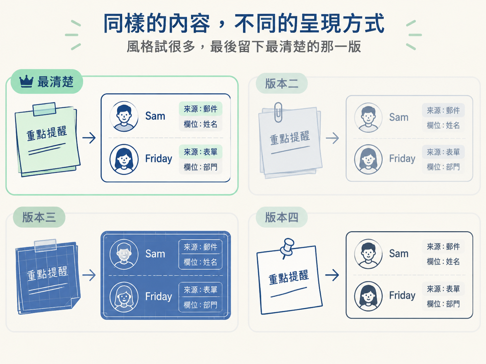

這一課要分清楚一件事：換風格只改變畫面的外觀，不會改掉教學內容、時間碼或你已經做出的判斷。最後，留下最清楚、最適合觀眾理解的版本。
走到這裡，你已經確認畫面真的解釋得通了：關鍵字準確、一次只強調一個重點、畫面和旁白同步，就算縮到小視窗也還看得清楚。
可是，同一個畫面看久了，你可能會開始想：配色是不是太素？換成藍圖風格會不會更專業？字體換一下，是不是會更好看？
這些想法都很合理。但如果你直接請 AI「重新做一版」，回來卻發現時間碼跑掉了，便利貼上的文字也被換掉，原本驗證過的教學就可能跟著走樣。
問題不在於不能換風格，而在於要先分清楚：哪些東西可以動，哪些東西必須留在原位。這一課就是要畫出這條界線，讓你追求好看的同時，不會把已經做好的教學一起弄丟。
這裡說的「風格」，指的是畫面呈現出來的樣貌，包括顏色、字體、材質，以及整體的視覺調性。
同一張「便利貼加卡片」的畫面，可以使用現代感的扁平配色，也可以改成工程藍圖般的線稿質感。就像同一間房子換了油漆和燈具，房子的格局並沒有因此改變。
相對地，下面這些才是構成教學本身的內容：
這些東西不是風格，而是影片真正要教給觀眾的內容。因此界線很清楚：換風格時，內容與時間碼必須原封不動。AI 換的是外層的呈現方式，不是裡面的資料。
你可能會好奇：如果整個畫面都換了外觀，為什麼內容和時間不會一起被改掉？關鍵就在於「可重複使用的工作區」把不同種類的資訊分開存放。
在這種工作區裡，教學內容、時間碼和視覺外觀不是揉成一團，而是各自放在不同層次。當你請 AI 套用另一種風格時，它做的是替畫面換上一層新的外觀設定，而不是重新製作整支影片。
因此，原本的資料沒有被碰到，時間碼也不需要重新安排。你可以把它想成替同一本書換封面：封面可以換成藍圖風、扁平風或其他樣式，但書裡的文字和頁碼仍然留在原位。
這也是整套流程值得學的地方。當你已經逐項完成教學決定並審查過，之後就能反覆嘗試不同外觀，而不必每次都重新判斷內容。AI 可以改變畫面長什麼樣子，但你保留自己已經做出的教學決定。
換風格不能拿來掩蓋解釋不清的問題。如果某一段畫面本來就讓人看不懂，換成更炫的配色或更華麗的材質，並不會讓內容突然變清楚。它只是替問題穿上漂亮的外套。
所以順序很重要：先確認解釋通了，再驗證畫面和旁白都沒有問題，最後才來調整風格。
換完之後，也要花幾秒鐘檢查界線是否守住：
如果答案都是肯定的，就表示這次真的只換了風格，沒有動到教學。
風格可以試很多種，但不需要全部留下。課程的建議是，選出「最清楚」的那一版。
這裡的標準不是哪一版最花俏，而是哪一版最能幫助觀眾跟上解釋。只要觀眾能看懂 Sam 和 Friday 的資訊、看出來源與欄位的關係，也能在正確的時間注意到關鍵字，這個版本就比單純好看更有價值。

選定版本後，它會進入下一課的最後階段：如果還有一處不對，做一次真正有用的修正，然後匯出成影片檔。你在場景階段做過的內容判斷、時間安排與風格選擇，最後都會跟著這個版本一起被帶出場，成為觀眾螢幕上看得見的成品。
風格是外觀，包括顏色、字體與質感；教學是內容與時間，包括原文、欄位、時間碼，以及你審查過的每個決定。換風格時只動外觀，內容與時間碼原封不動。先讓解釋通了，再來換外觀，最後留下最清楚的版本，帶進下一課的修正與匯出。
場景到這裡就完成了。下一課要處理最後一哩路：如果還有一處不對，怎麼提出一次真正有用的修正，然後把成品匯出成可以播放、可以分享的影片檔。